Exploring Character (Text) Tilesets in NES / SNES Games
1. Introduction
The purpose of this article is partly notes for myself, but also a way to show what I have done and how the system works. In no way would I say that this is the best or even a good way to handle tile-based text, I was simply inspired by the 8x8 font system used in various NES/SNES games and was curious of how to implement such a system myself.
Main focus will be on functionality and examples, not on code.
2. Inspiration
Let’s start by looking at the password screens in the NES games Metroid and Kid Icarus.
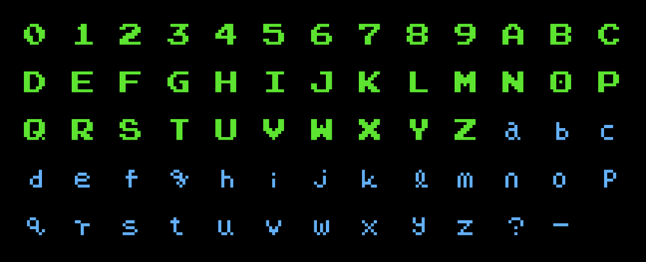
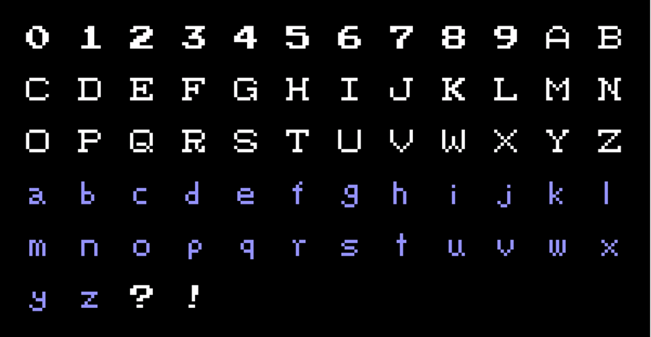
Slightly different styles, but both fonts are using 8x8 tiles with 7x7 characters. The blank row is at the bottom and the blank column is to the right in the tile. This means that characters can be stacked next to each other with built-in spacing for text.
However, these fonts are not really made for long texts and only upper case text looks somewhat decent for short sentences.
3. Tile Editor 1 and the First test
I wrote a small program to visualize characters in the simplest way. If a tile is 8x8 pixels it can be represented with 8 bytes with two colors (typically black and white).
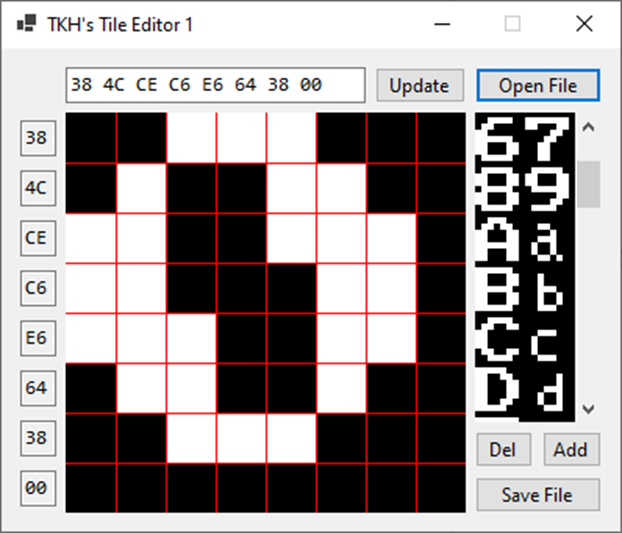
All text boxes to the left represent the rows and the box up top has all values combined to make it easy to copy all values at once and also paste a string of 8 hex values and update the entire field at once. The character map is saved to and loaded from a character file (from now on called CHR file).
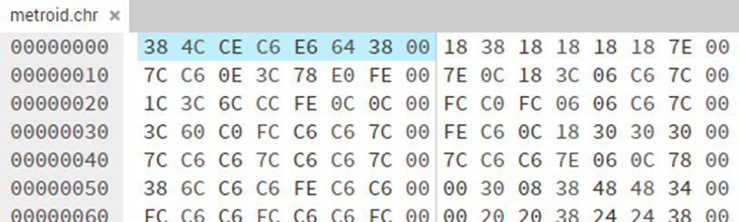
Looking at the CHR file from the example above shows the same combination of hex values, marked in blue. Note that all characters are packed as tightly as possible with only eight bytes per character and no additional information.
CHR files were created for both Metroid and Kid Icarus fonts. Initially by drawing the numbers by hand by looking at the password screens and copying pixel by pixel, but the method/process is very time consuming and was only used for the numbers and a few letters. Add to this the risk of making mistakes when drawing manually.
If the Metroid ROM is opened in a hex editor, the same byte combination can be found by doing a quick search. One text string could be randomly matched but if several “characters strings” after each other match it’s for sure the character set.
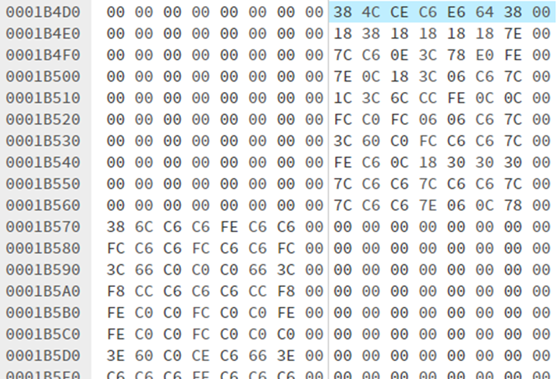
Ten numbers (0-9) with the matching values and after that at 0x1B570, starting with “38 6C”, is the letter ‘A’ and so on. So instead of drawing characters manually, the eight bytes can be copied directly into the tile editor. Much faster and no risk of drawing a character wrong.
It can be seen that every character in the ROM file consists of 16 bytes which means two bits per pixel (2 bpp) - giving a possibility of four different colors for a tile. The colors are decided from a palette in larger groups but the details regarding palettes are better explained by others, and it’s not a system I would need or like to follow for my test program. However, the CHR files have only 1 bpp (so far) so the first tests would be with only black and white.
I moved on to a new test program to draw strings with the font from a character file.
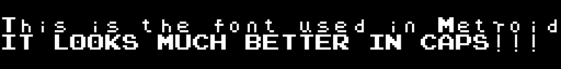
The first test with the Metroid font really showed that it was not meant to be used for texts. Capital letters look fine but it would be annoying to be limited to only those.
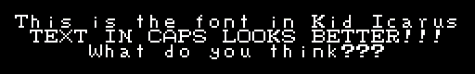
The Kid Icarus font was better, but the weak point is again the lower case letters.
For some reason I looked at the font for one of my favorite games: ActRaiser (SNES). It has lots of text and is not only using capitals. The name entry screen has a similar good summary as the other password screens:
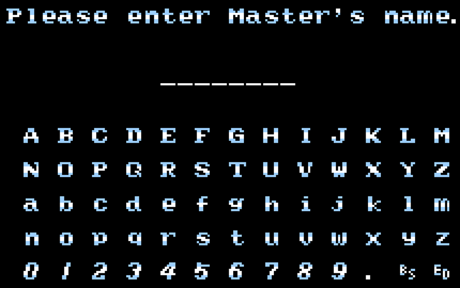
The screen even has an example of a text with both upper and lower case letters and I liked how it looked (perhaps somewhat biased) and decided to create a CHR file for this game as well. It wasn’t as simple as with the other games though.
As can be seen in the image, at least three colors are used for a character: white, light blue and the rest is black. But SNES graphics support transparency as a color for graphics (I am not sure of NES games), so for the text they could use either black or transparency. Regardless, I knew the font would make use of both bit planes.
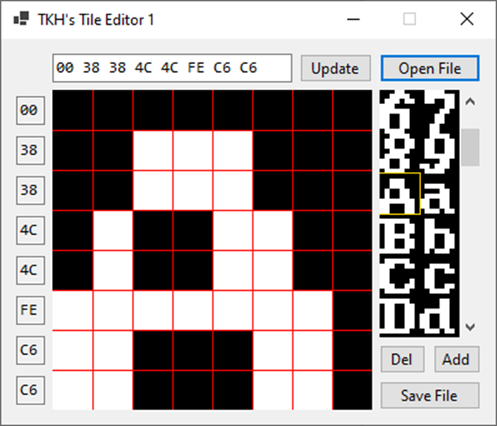
After some work, a new character file was drawn (manually) as the “ROM value search” method was not applicable for some reason. More on this later. For this CHR file, white would represent both white and light blue and use black for the rest..
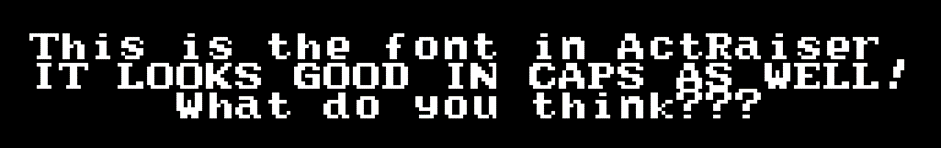
The text looks much better with this font and it really shows that it was made with readability in mind. And if using text on black background, this would work perfectly for my purpose! The work could actually stop here so I could move on to implementing the system in the target application, but I didn’t.
Again, I will not even try to go into detail, but from my understanding the graphics used for the text in ActRaiser is at least 2 bpp, and because it can use transparency it is more flexible and can be used on almost any background and not only black like in this first test. It would of course be possible to have other colors than black and white, and even transparency to overlay text onto something else, but the system is still quite limited.
However, the program and methods used were not designed for 2 bpp so it was unclear how much work it would be to upgrade to a new system. In the end, the idea of a flexible and more colorful font was too intriguing and it was time to expand the scope and double the bit depth - growing the ActRaiser CHR file to a massive 1088 bytes (at the time of testing)!
4. The Second Test and Tile Editor 2
After a lot of work, a new program and an ActRaiser 2bpp CHR file was created. By investigating the tiles in the emulator Mesen-S, which has several interesting developer tools included, I could confirm that the characters are indeed using 2 bpp, which means a total of four colors.
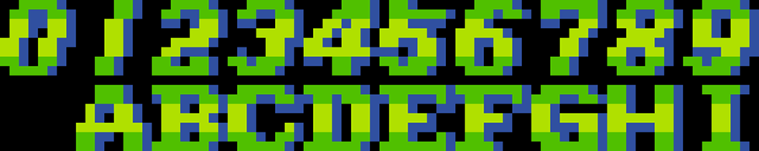
On a black background it’s impossible to distinguish transparent and black tiles, but by saving the character map to a file using a different palette it was possible to separate black and transparent pixels.

The new version basically works in the same way and is in the image above showing two bitplanes next to each other as well as the resulting combined character to the right.
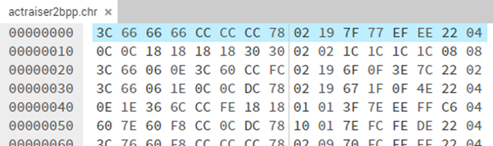
The character file looks very similar, and the byte values from the editor example above can be found in the file when looking in an hex editor (marked in blue). Looking at character addressing in the hex editor, it kind of makes sense to use two bit planes per tile (or character).
With a new system defined, and a new character map file in place it was time to prepare a proper test.
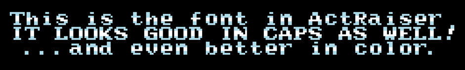
The first test was performed with the same colors as the game use, and it looked great! But with black background, the shadow is not visible. Thanks to palette presets it’s easy to change to other combinations, and also testing different background colors.
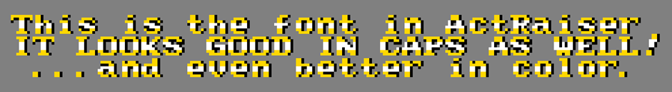
However, care should be taken to what background color or graphics is used behind text.
By modifying the palette, which could be done at any time, the shadow color could be exchanged to another (shadow) color or even transparent (to skip it) if it would make for a better visual appearance.
The three palette examples above, using three different background colors, are summarized in the table below.
| Palette | Color 00 | Color 01 | Color 10 | Color 11 |
|---|---|---|---|---|
| Palette 0 | Transparent | Black | Light Blue | White |
| Palette 1 | Transparent | Black | Gold | White |
| Palette 2 | Transparent | Transparent | Gold | Gold |
The new system is more flexible and can mimic the original 1 bpp style if desired. I have a feeling that I won’t go back to the old system as the 2 bpp system works perfectly.
5. Updated method to extract data from the ActRaiser ROM
While getting raw data extracted from NES ROMs was easy, the SNES extraction was a completely different story. When I didn’t get any match from searching in the ActRaiser ROM file I did some research and found out that data is stored in compressed form. And later I actually found a text saying that the data was compressed using the LZSS algorithm.
Earlier I mentioned the developer/debugging tools in Mesen-S but at that time I only used them to save graphics to file. I knew it was also possible to look at Video RAM, and I was hoping to find the uncompressed character data there instead - which would be the next best thing after directly from the ROM. However, there was no match when searching so I gave up on this track and drew everything manually. I had however missed out on an important difference between NES and SNES graphics, and also didn’t notice the leads.
After some questions in the Retro Game Mechanics Explained Discord server I learned from Kagamiin~ that SNES tiles using two bit planes are not stored in the same way as NES (where bit planes are “split”, or placed “after each other”). The big difference is that SNES tiles are combined or “spliced” which means the row’s byte values for first and second bit planes are consecutive. A few screenshots are needed to fully explain this.
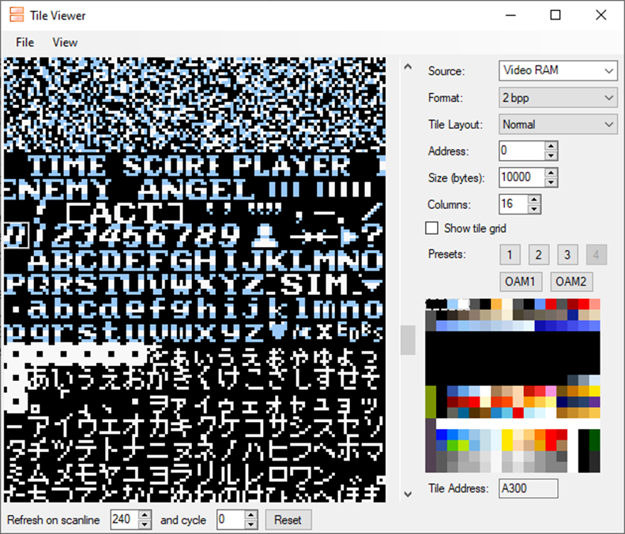
Using the Tile Viewer in Mesen-S when being on the same name entry screen as before we can see in the bottom right corner that the character ‘0’ is located at Tile Address $A300. This is the address in Video RAM.
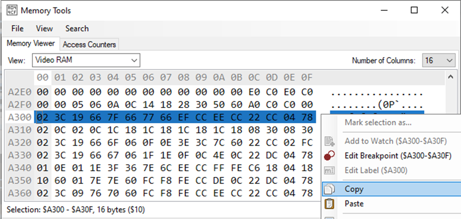
In the Video RAM, at that address we can copy the 16 bytes corresponding to the character.
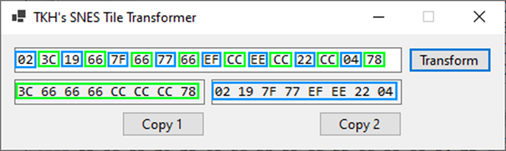
I wrote an extremely simple tool to take a string of 16 values and split them into two strings with 8 values each, split on every second value. These two strings of 8 hex values in each could then be copied into the Tile Editor 2.
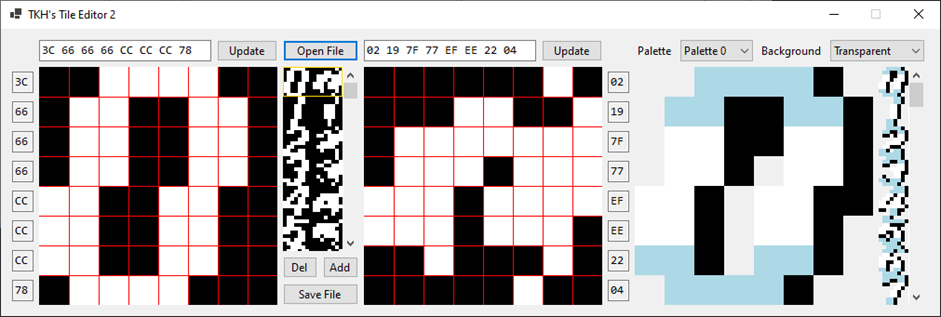
And it was a perfect match to draw the ‘0’, even though I had to reverse the plane order to match my system. This was the missing piece to the puzzle, and now it was possible to copy each character to the Tile Editor and get a perfect match without any manual drawing! It would of course be possible to do a RAM dump and transform the entire file at once instead.
6. A bit of code
Most of the functionality is quite basic but I feel that I can write a few words on the key method to handle the bits in every byte (which is a row in a tile). Some explanations below the code, and this is the function to draw the combined image (tile) with up to four colors. The same method is used for other fields in the application but in variations depending on what field is updated (like single planes or the "character maps").
byte[] tile1 = new byte[] { 0, 0, 0, 0, 0, 0, 0, 0 };
byte[] tile2 = new byte[] { 0, 0, 0, 0, 0, 0, 0, 0 };
Brush[] selectedPalette = new Brush[] { Brushes.Transparent, Brushes.Black, Brushes.LightBlue, Brushes.White };
private void UpdateCombinedField()
{
Graphics g = Graphics.FromImage(bmp_tile3);
g.Clear(bgColors[cb_bgColor.SelectedIndex]);
Brush b;
for (int y = 0; y < tile1.Length; y++)
{
int var1 = tile1[y];
int var2 = tile2[y];
for (int x = 7; x >= 0; x--)
{
int color = 0;
if ((1 & var1) > 0)
{
color += 2;
}
if ((1 & var2) > 0)
{
color++;
}
b = selectedPalette[color];
g.FillRectangle(b, x * 32, y * 32, 32, 32);
var1 >>= 1;
var2 >>= 1;
}
}
pb_combinedTiles.Image = bmp_tile3;
}For every pixel in the 8x8 tile, color is picked by looking through the two bit planes called tile1 and tile2. They are simply byte arrays with eight bytes in each and they are obviously updated with new values (when clicking on a tile in the character map) before running this function. We also have a list of brushes, and which one to use for a given pixel is decided in the inner for-loop by looking at the same pixel in both bit planes.
The (1 & var) checks if the lowest bit is set (1), adding 1 and/or 2 to the color picker depending on value in each bit plane. The lowest bit is on the rightmost side and that's the reason for starting with x = 7. This gives a color value from 0 to 3, the pixel is then drawn with the corresponding brush. After this, the tile byte is shifted one step right and the next pixel on the row is checked and drawn - to the left of the previous pixel. This is repeated for each bit and each byte which means that the double for-loops will run a total of 64 times (and check both planes each time). Simple, right?
7. Proper decompression of tile data for font
Even though the “Video RAM” method works perfectly (explained in part two) I was still curious about the LZSS algorithm and looked a bit more into that. Internet searches took me to a forum question regarding this very specific topic (and I hope all external links stays active!):
https://www.romhacking.net/forum/index.php?topic=25578.0
One of the replies took me to a github project to decompress various SNES games:
https://github.com/Osteoclave/game-tools/tree/main/snes
ActRaiser was developed by Quintet and it seems they used the same LZSS algorithm for several games. This GitHub repo had among other things python scripts for compressing and decompressing compressed graphics from these games. I already had Python installed for Visual Studio so I copied the decompression code into a new project and could eventually run it.
The web page with the previously mentioned compression information also have a somewhat extensive description of the ActRaiser ROM file:
https://datacrystal.romhacking.net/wiki/ActRaiser:ROM_map
Among other interesting details, this row gave additional critical information:
0xBECFB to 0xBF7A1 = Compressed font graphics (2BPP GameBoy0xFormat)This part of the ROM could in other words contain all text I was actually looking for in the beginning, but I had given up on this track long ago due to the compression. But with a decompression tool at hand I was back for an additional go. I had already extracted all data from this address segment into a separate file (easily done on https://hexed.it) of 2,727 bytes. It was for me unknown if the compressed data could be decompressed as a stand-alone file or if decompression was made for a larger ROM area and requires more data before and/or after. Only one way to find out, and running the script without parameters gives some info about how to run it (note: I shortened the "path" in all below pastes):
Usage: <path>\LZSS_decomp.py <inFile> <startOffset> [outFile]So I ran the script twice, note the difference in the offset value:
<path>LZSS_decomp.py ActRaiser.smc 0xBECFB a.smc
Last offset read, inclusive: BF7A1
Compressed size: 0xAA7 (2727) bytes
Uncompressed size: 0x1000 (4096) bytes
Ratio: 0.665771
<path>LZSS_decomp.py ActRaiser_Font.smc 0x00 a_f.smc
Last offset read, inclusive: AA6
Compressed size: 0xAA7 (2727) bytes
Uncompressed size: 0x1000 (4096) bytes
Ratio: 0.665771After these operations I had two files with the exact same size (4096 bytes) and after a quick check in a hex editor they seemed identical. Running the file compare tool proved they were equal:
<path>fc /b a.smc a_f.smc
Comparing files a.smc and A_F.SMC
FC: no differences encounteredPerhaps perfectly logical if you know the algorithm, but it seems to know when to stop based on values or the script has a maximum block size. At this time I haven’t looked much into the code and definitely not for this detail.
If all went according to plans (and hopes) any one of the two files would now contain uncompressed font graphics. But I knew I would have at least one more step as the graphics would probably be using the SNES combined/spliced bit plane system. Previously I had made a simple tool to convert a hex string from the combined/spliced data into split byte order, but now I needed it for an entire file. To write that code didn't take long as already knew what to do, and then I opened the new file in the Tile Editor.
It actually looked like it worked but some colors were wrong. I had a feeling they would be because I had to change order (of the bit planes) with my first Tile Transformer tool. But after fixing that it looks fine! Note: I manually set a green instead of transparent background to make the four colors easier to see.
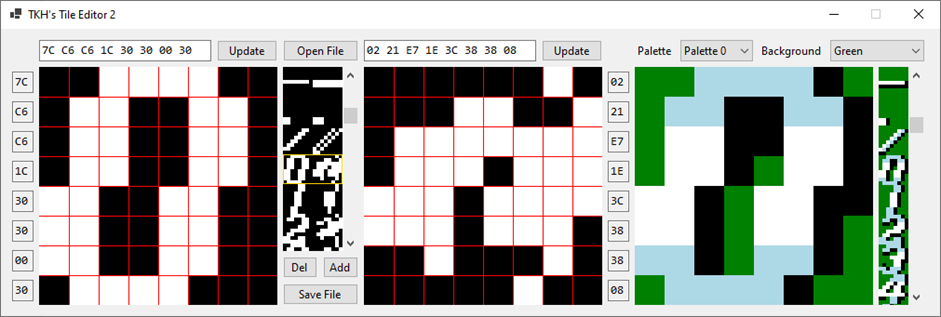
A perfect match to the previous ‘0’ extracted from Video RAM (and of course to the manually drawn character from before)!
Finally, after lots of manual work and unexpected detours the entire tilemap was extracted from the ROM to a format I could use. The entire Video RAM is much larger but it seems like the “font block” was contained in this 16x16 tile block. And with 16 bytes per tile it matches the 4096 byte file size. In the Tile Editor it’s easy to remove characters anywhere in the file and by using the “Insert” function it’s not too much work to move characters from one position to another.
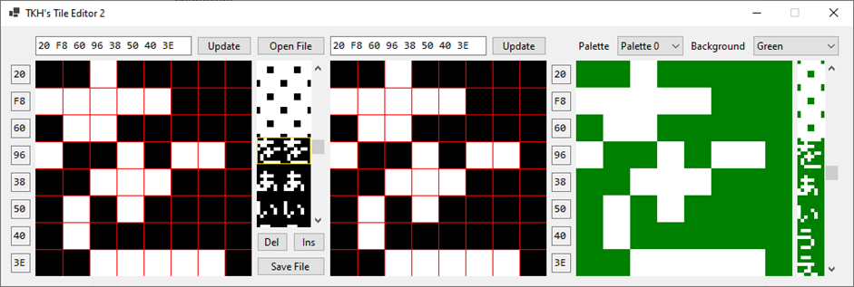
Holding Shift will change the “Add” button to “Ins”, as can be seen in the image, which will insert a new “character row” at the marked position. A minor, but interesting, detail is that Japanese characters are all white with no shadows.
8. Video RAM Dump Method
I didn’t at the time, but I could have made a Video RAM dump and looked for a match for characters, so I will show that as well. We can use the address from the Tile Viewer in Mesen-S to find a reference character, let’s use the ‘0’ in address $A300:
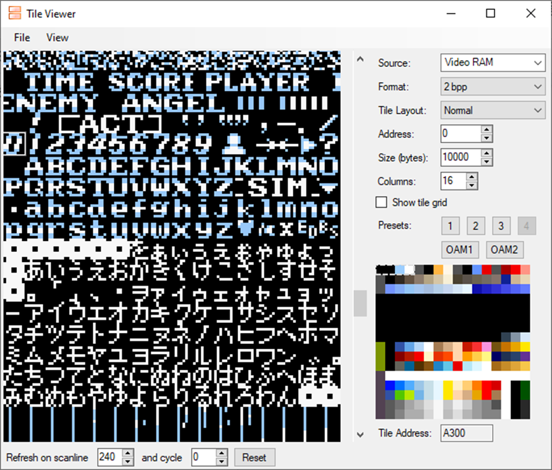
And then looking in Video RAM in Memory Tools in Mesen-S:
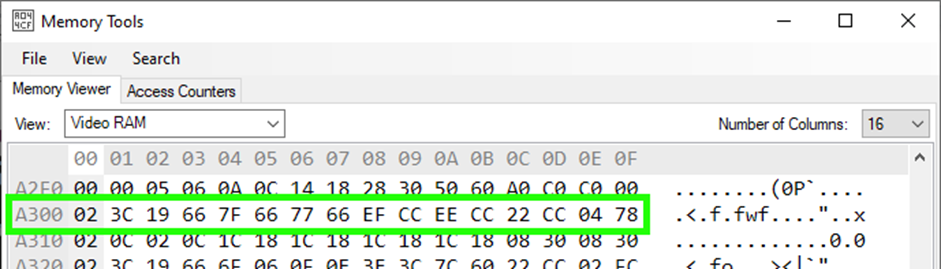
The character ‘0’ should be the hex string to look for, these are the “hex strings” I copied when using the Tile Transformer in the method covered in the second post.
Knowing what we do now, it’s expected to find the string in the decompressed file extracted from ROM and we can confirm it with a quick search (using the same hex editor as before) and we can find our character at address $300.
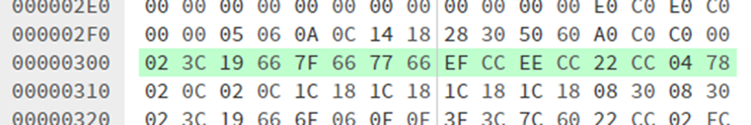
The file size is as mentioned previously 4096 bytes but Video RAM is 64kB, so I knew we wouldn’t have to be at address $A300, but it makes sense when looking at the Tile Viewer in a screenshot further up. If the blank tile to the left of "TIME" has address $0000 it means that the character 0 we searched for has position 48 (16 tiles per row, and first sign on the fourth row). Hex 300 is 768 in decimal, and divided by 16 (bytes per tile) gives us position 48. However, the most important detail is that it’s there, and perhaps I should have taken this step before I wrote code to change the byte order of an entire file but I was convinced that it would work so I didn’t even think about verifying it beforehand.
Doing this final check was still a good thing because it proves that the idea and method is working and seems correct. And after testing this method on another game it actually feels like this might be the best method as I now have all tools needed to easily dump, crop and transform hex data into a character file as seen in the Tile Viewer 2.
9. Ending words
Overall, the tests came out as desired. I now have a system I can implement in some other projects but before going all in, it would probably be a good idea to optimize it. In this first version of this “text system” I am doing a bit check on every pixel for every character when printing text - even if letters are reused. It makes for a flexible system where I can change palette whenever I need, but in a target application I would probably not do it very often. Perhaps it would be better to make a character map and change it when needed. One would need to decide how flexible it has to be, for example if it's required to be able to change colors within the same block of text.
The method to extract character/tile data from Video RAM using Mesen-S can probably be used with most other SNES games as well, and by doing so getting around any compressed data obstacles. I have at this time not checked into other games but can imagine it’s not a unique method to ActRaiser and other Quintet games, however the compression method will surely be different.
When it comes to compression, it’s of course useful to know what compression type is used but sometimes more information is needed to decode the data. In this case I had no idea of the LZSS “settings” which would have made decompressing the data difficult, but even if I had known the look ahead and sliding window size I would probably not have tried to create a decoder myself. Thanks to the python scripts I found, I now know the sliding window size (which is the “history”) is 256 bytes long, and the look ahead window is 16 bytes. So I might look further into the LZSS algorithm, but for this project it’s not needed and all questions from when I started are now answered.
This concludes this multi-part exploration (it was initially a three-part article series), but as I have a system that works it would be logical to implement this system in some project, making use of all work I put into this investigation. Thanks for reading!